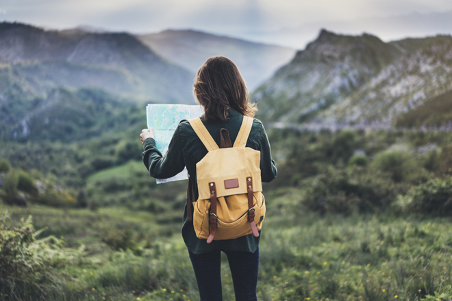

Consejos si vas a viajar solo/a por primera vez 🧳 
Si entraste a este enlace es porque probablemente querés viajar solo/a por primera vez pero estás en una disyuntiva: Te morís de ganas, pero te pueden los miedos
Tengo una buena y una mala noticia para darte. La mala es que si la curiosidad está ahí dando vueltas, no se va a ir. La buena, es que lo que te está pasando es algo muy común. Por eso hoy quiero traerte estos 3 consejos para que te animes a dar el primer paso
¿Estás pensando en hacer tu primer viaje sola/o y no sabés por dónde empezar? 🌍✈️
📝 Planificá bien tu viaje
Esto implica leer sobre el destino que querés visitar, armar un itinerario que incluya:
📍Zonas que te interesan visitar
🏨Buscar dónde vas a alojarte
💰Hacer un presupuesto para estar tranquilo/a en lo económico
✈️Si optas por viajar en avión existen plataformas que te permiten realizar combinación de aerolineas y obtener un vuelo más económico
Una buena opción es Turismocity
📝 Cuidá tus objetos de valor
📄Lleva siempre copia de tus documentos
💰No dejes todo el dinero en un mismo lugar, de este modo estarás más cubierta ante un robo o pérdida
📷 Si viajas con cámaras o computadora, mantenelas siempre a la vista y con vos.
Esto es importante, sobre todo, si vas a viajar en autobuses o trenes donde corrés el riesgo de quedarte dormido/a 😴
📝 Invertí en un buen seguro de viajes
🌍 Si vas a viajar fuera del país, no escatimes en tu seguro de viajes
💊 Tener un buen seguro es tener un respaldo no solo en caso de enfermedad o accidente
✈️ sino también frente a un vuelo cancelado
🧳 valijas perdidas
🦷 o una muela partida que puedan arruinarte la experiencia de viajar solo/a por primera vez